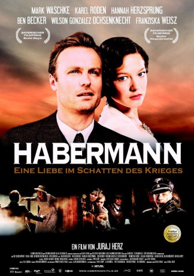
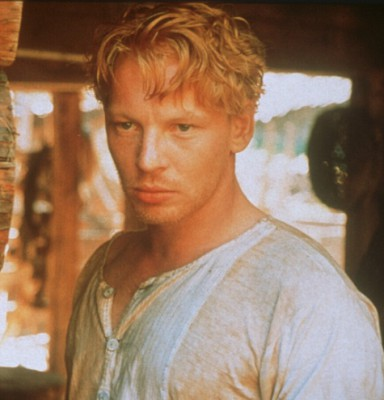
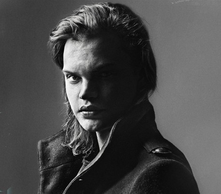
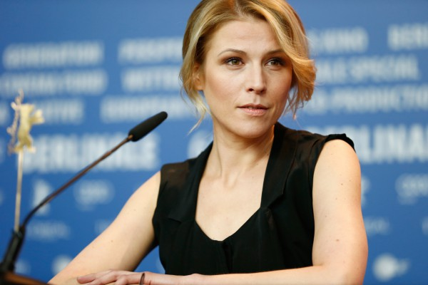
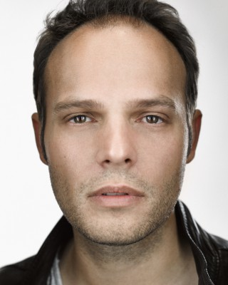

#6124 Habermann
 
 IMDB-Wertung: 7.2 / 10
IMDB-Wertung: 7.2 / 10  Metascore: 0
Metascore: 0 
Seit Generationen wird das örtliche Sägewerk von der Familie August Habermanns betrieben. Als er Jana, eine Halbjüdin, heiratet, scheint sein Glück perfekt. Doch die friedlichen Zeiten enden jäh: Das Sudetenland wird 1938 "heim ins Reich" geholt, Sturmbannführer Koslowski terrorisiert die Dorfbewohner und stellt Jana unverhohlen nach. Der unpolitische Habermann gerät zwischen alle Fronten - den Nazis gilt er als Freund der Tschechen, für die Tschechen ist er nun kein Mitbürger mehr, sondern verhasster Besatzer.
Jahr: 2010
Dauer: 100 Minuten
FSK: 12
Land: Deutschland Studio: Farbfilm-VerleihTonspuren:
Untertitel:
Auflösung: 1080p (1920x1040) Größe: 7004 MB
Genre: Drama, Krieg, Liebe
Regisseur: Juraj Herz
Drehbuch: Claudio Fava
Soundtrack:
Darsteller:
 Karel Roden als Karel Brezina
Karel Roden als Karel Brezina-  Ben Becker als Sturmbannführer Kurt Koslowski
 Hannah Herzsprung als Jana Habermann
Hannah Herzsprung als Jana Habermann- Radek Holub als Masek
-  Wilson Gonzalez als Hans Habermann
- Zuzana Krónerová als Eliska Masek
- Jan Hrusínský als Vaclav Pespichal
-  Franziska Weisz als Marta Brezina
- Oldrich Kaiser als Brichta
- Martin Stránský als
- Jaromír Dulava als Buchhalter Hora
- Klára Cibulková als
- Veronika Gajerová als
- Martina Hudecková als
- Matej Hádek als
 Martin Umbach als Karel Brezina
Martin Umbach als Karel Brezina- Anita Höfer als Marie Spurná
- Erika Guntherova als Village Girl , uncredited
-  Mark Waschke als August Habermann
- Andrej Hryc als Bürgermeister Jan Hartl
- Martin Sitta als
- Paulína Bohmerová als
- Petr Pochop als
- Václav Legner als
- Zdenek Braunschläger als
- Thomas Zielinski als
- Michal Pavlata als
- Petr Drozda als
- Roman Vejdovec als
- Marie Boková als
- Radek Zima als
- Ludmila Molínová als
- Gabriela Dorantová als
- Dylan Don Dirka als
- Hans Georg Panczak als Radek Holub
- Willi Röbke als Oldrich Kaiser
- Christoph Jablonka als Jaromír Dulava
- Michael Schwarzmaier als Jan Hrusínský
- Michael Gahr als Zdenék Braunschläger
- Claus Brockmeyer als Michal Pavlata / Marie Spurná
- Ulrich Frank als Václav Legner
- Elisa Ragheb als Marie Boková
- Ziad Ragheb als Matéj Hádek / Jakub Smid
- Walter von Hauff als Josef Moravec Motov
- Jurij Gotowtschikow als
- Maximilian Belle als
- Thomas Albus als
- Arthur Galiandin als
- Luna Ragheb als
- Gerhard Acktun als
Datei: X:\2010(G-M)\Habermann (2010, FSK12, 1920x1040).mkv seit 03.05.2017
Festplatte: HD 2010(G-Z)-2011(A-F)
 Es gibt insgesamt 85 Filme in der Gruppe '2010(G-M)'
Es gibt insgesamt 85 Filme in der Gruppe '2010(G-M)'